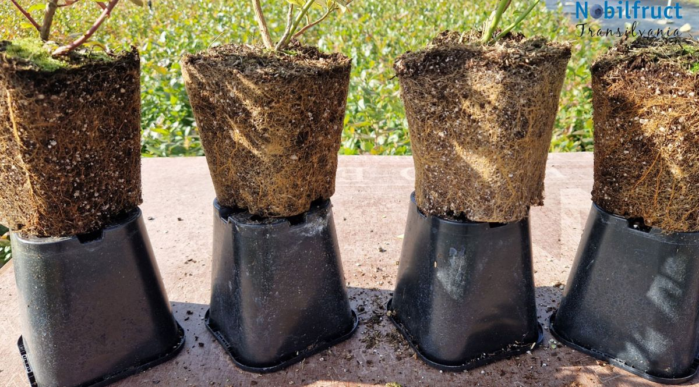

Cum se obține o plantă de afin
Din butași. Se taie lăstari de pe o plantă-mamă, se înrădăcinează în substrat și, după câteva luni, se mută în ghiveci. E metoda clasică, ieftină și simplă. Planta nouă moștenește însă tot ce are planta-mamă: eventualele boli, dar și anumite defecte, cum ar fi diferențe la momentul coacerii: fructele se pot coace cu aproximativ o săptămână mai târziu sau mai devreme, în funcție de lăstarul din care a fost luat butașul. În plus, lăstarii nu sunt identici nici măcar pe aceeași plantă: diferă în funcție de expunerea la soare și la lumină, de tratamente și de alți factori.
In vitro. Se pornește de la fragmente foarte mici de plantă, înmulțite în condiții sterile de laborator, pe un mediu nutritiv. Plantulele obținute se înrădăcinează, se aclimatizează treptat la condițiile de afară și apoi cresc în ghiveci. Procesul e mai lung și mai scump, dar plantele pornesc curate și uniforme.
Ce spun studiile
Comparația dintre cele două metode a fost studiată în câmp, pe mai multe varietăți și în mai multe țări. Rezultatele cele mai clare vin din Florida, unde aceleași varietăți au fost plantate în paralel, din butași și din material in vitro:
Plantele in vitro au avut mai multe tulpini, iar numărul de tulpini a fost legat direct de producție: cu cât mai multe tulpini, cu atât mai multe fructe. La a treia varietate din studiu, Primadonna, metoda de înmulțire nu a contat.1 Încă de la plantare și după primul sezon, plantele in vitro din toate cele trei varietăți aveau mai multe tulpini principale și mai multă masă vegetală.2
Un studiu de lungă durată din Minnesota, pe varietatea Northblue, a găsit plante mai viguroase, mai ramificate și cu producții mai mari în primii trei ani la materialul in vitro. Autorii au observat că avantajul se estompează în timp în zonele mai calde, dar poate rămâne important în zonele mai reci, cu sezon de vegetație scurt.3 Este situația multor zone din Transilvania.
Ca să fim corecți: in vitro nu înseamnă automat o plantă mai bună. Într-un studiu din Estonia, plantele din butași au crescut mai înalte în primii ani și au avut o masă de rădăcini mai mare, iar o clonă in vitro a suferit mai mult de pe urma înghețului.4 Calitatea materialului in vitro depinde de laboratorul de proveniență și de cum este crescută apoi planta. De aceea contează pe cine alegi.
Sănătatea plantei: bolile vin odată cu butașul
Multe dintre virozele afinului nu au tratament: o plantă infectată rămâne infectată toată viața. Ghidurile Universității de Stat din Michigan arată că aceste virusuri se răspândesc prin material săditor infectat și prin vectori precum insectele și nematozii, iar pentru unele dintre ele butașii infectați sunt sursa probabilă a infecției.5 Recomandarea lor este aceeași pentru aproape fiecare viroză: plantați doar material săditor testat și certificat.
Pentru fermier, o viroză adusă cu plantele înseamnă producții mai mici an de an și plante care se sting treptat, într-o cultură gândită pentru 20 de ani sau mai mult.
Al doilea lucru care contează, și poate cel mai important: rădăcina din ghiveci
Aici e partea pe care cei mai mulți o ignoră. În România și în Polonia, majoritatea plantelor de afin în ghiveci sunt crescute în turbă simplă și fertilizate des. Planta crește repede și arată bine la vânzare. Problema se vede abia după plantare.
În turba simplă, rădăcinile mici întâmpină rezistență să pătrundă printre fibrele de turbă și aleg calea cea mai ușoară: exteriorul balotului, mai ales că acolo ajunge și o bună parte din îngrășământ. Ajung repede la perete, îl ocolesc și se înfășoară în jurul balotului, în loc să exploreze interiorul ghiveciului. Cercetările pe plante lemnoase crescute în container arată că aceste rădăcini circulare se lignifică și rămân o deformare permanentă, care limitează creșterea rădăcinilor în solul din jur și întârzie prinderea.6 Studiile despre fertilizare în pepinieră arată, la rândul lor, că plantele hrănite intens cresc mai multă parte aeriană decât rădăcină și, după transplantare, refac mai puțină rădăcină.7
În câmp, asta înseamnă plante care stagnează în primii ani sau se pierd după plantare.

De aceea noi nu creștem plantele în turbă simplă. Folosim un substrat special, în care rădăcina se dezvoltă și în interiorul balotului, nu doar pe margini. Pentru noi e mai dificil: apa se scurge mult mai repede, substratul reține mult mai puțină apă, iar managementul pepinierei cere atât cunoștințe de specialitate, cât și o atenție sporită.
De ce optăm pentru asta? Pentru ca fermierul să primească o plantă cu o rădăcină sănătoasă și puternică, care se adaptează ușor în câmp. Pierderile la plantare sunt practic inexistente: 1–2 plante la 10.000.
Pe scurt
| Butași | In vitro | |
|---|---|---|
| Sănătate | Moștenesc bolile plantei-mamă, inclusiv virozele | Pornesc curate, din material verificat |
| Tulpini de la bază | Mai puține | Mai multe în primii ani, cu efect direct asupra producției1 |
| Uniformitate | Variabilă, după planta-mamă și chiar după lăstarul folosit | Plante uniforme, identice cu varietatea |
| Primii ani de producție | Bază de comparație | Producții mai mari la mai multe varietăți studiate1,3 |
| Preț | Mai mic | Mai mare: proces mai lung și mai costisitor |
Indiferent de metoda de înmulțire, întrebați și de rădăcină: cereți să vedeți o plantă scoasă din ghiveci. Un balot plin de rădăcini în interior, nu doar un covor de rădăcini pe margine, este cel mai bun semn că planta se va prinde.